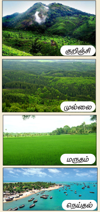

தமிழர்களின் பண்டைய வணிகம் குறித்து அறிதல்
வணிகத்தின் வளர்ச்சி நிலைகளைப் புரிந்து கொள்ளுதல்
தொழில் மூலம் அடையும் முன்னேற்றத்தை உணர்தல்
இன எழுத்துக்களைப் புரிந்து கொண்டு, சொற்களில் சரியாகப் பயன்படுத்துதல்
காடுகளில் வாழ்ந்த மனிதன் அக்காடுகளைத் திருத்தி விளைநிலங்களை உருவாக்கினான், பயிர்களை விளைவித்தான், ஊர்களை உருவாக்கிக் கூடி வாழ்ந்தான், பல்வகைத் தொழில்கள் மூலம் தன் வாழ்வை மேம்படுத்திக் கொண்டான், தொழிலிலும் வணிகமும் அவன் வாழ்க்கையை உயர்த்தின. தமிழரின் வணிக மேன்மையை அறிவோம் வாருங்கள்.
கல்லெடுத்து முள்ளெடுத்துக் காட்டுப் பெருவெளியை
மல்லெடுத்த திண்தோள் மறத்தால் வளப்படுத்தி
ஊராக்கி ஓங்கும் நகராக்கி நாடென்ற
பேராக்கி வாழ்ந்த பெருமை அவன்பெற்றான்,
மாநிலத்தில் முல்லை மருதம் குறிஞ்சி நெய்தல்
நானிலத்தைக் கண்டபெரும் நாகரிக மாந்தன்அவன்,
ஆழக் கடல்கடந்தான் அஞ்சும் சமர்கடந்தான்
சூழும் பனிமலையைச் சுற்றிக் கொடிபொறித்தான்
முக்குளித்தான் ஆழிக்குள் முத்தெடுத்தான் தோணிக்குள்
எக்களிப்பு மீதூர ஏலம் மிளகுமுதல்,
பண்டங்கள் ஏற்றிப் பயன் நல்கும் வாணிகத்தால்
கண்டங்கள் சுற்றிக் கலமேறி வந்தவன்தான்,
அஞ்சாமை மிக்கவன்தான் ஆனாலும் சான்றோர்கள்
அஞ்சுவதை அஞ்சி அகற்றி விலக்கிடுவான்
எழுதியவர், முடியரசன்

மல்லெடுத்த, வலிமைபெற்ற
சமர், போர்
நல்கும், தரும்
கழனி, வயல்
மறம், வீரம்
எக்களிப்பு, பெரு மகிழ்ச்சி
கலம், கப்பல்
ஆழி, கடல்
தமிழன் கற்களும் முட்களும் நிறைந்திருந்த பெரிய நிலப்பரப்பைத் திருத்திப் பண்படுத்தினான், தனது உடல் வலிமையால் வளத்தைப் பெருக்கினான், ஊர், நகரம், நாடு ஆகியவற்றை உருவாக்கி வாழும் பெருமையைப் பெற்றான், குறிஞ்சி, முல்லை, மருதம், நெய்தல் என நிலத்தை நால்வகைப்படுத்திய நாகரிக மனிதன் அவன்
பழந்தமிழன் ஆழ்கடல்களைக் கடந்து நெடும்பயணம் மேற்கொண்டான், அச்சம் தரும் போர்களிலும் எளிதாக வெற்றி கண்டான், பனிசூழ்ந்த இமயமலையில் தன் வெற்றிக் கொடியை நாட்டினான், ஆழ்கடலில் மூழ்கி முத்தெடுத்தான், ஏலம், மிளகு ஆகியவற்றைப் பெருமகிழ்ச்சியோடு கப்பல்களில் ஏற்றிக் கண்டங்கள்தோறும் அனுப்பி வணிகம் செய்தான், கப்பலில் உலகை வலம் வந்தான், அவன் எதற்கும் அஞ்சாதவன் ஆனால் சான்றோர்களைப் போன்று தீமைகளைச் செய்ய அஞ்சுபவன்
எதுகை
கல்லெடுத்து, மல்லெடுத்த
ஊராக்கி பேராக்கி
மோனை
கல்லெடுத்து, காட்டு
மல்லெடுத்து, மறத்தால்
முடியரசனின் இயற்பெயர் துரைராசு, இவர் பூங்கொடி, வீரகாவியம், காவியப்பாவை முதலிய நூல்களை எழுதியுள்ளார், திராவிட நாட்டின் வானம்பாடி என்று பாராட்டப்பெற்றவர்,
இப்பாடல் புதியதொரு விதி செய்வோம் என்னும் நூலில் இடம் பெற்றுள்ளது
1, நானிலம் படைத்தவன் பாடலை இசையுடன் பாடிக் காட்டுக
2, படித்து மகிழ்க
வெள்ளிப் பனிமலையின் மீது உலாவுவோம், அடி
மேலைக் கடல்முழுதும் கப்பல் விடுவோம்
கங்கை நதிப்புறத்து கோதுமைப் பண்டம்
காவிரி வெற்றிலைக்கு மாறு கொள்ளுவோம்
சிங்க மராட்டியர்தம் கவிதை கொண்டு
சேரத்துத் தந்தங்கள் பரிசளிப்போம்
பாரதியார்
1, போர்க்களத்தில் வெளிப்படும் குணம் டேஷ்
அ, மகிழ்ச்சி
ஆ, துன்பம்
இ, வீரம்
ஈ, அழுகை
2, 'கல்லெடுத்து' என்னும் சொல்லைப் பிரித்து எழுதக் கிடைப்பது டேஷ்
அ, கல் கூட்டல் அடுத்து
ஆ, கல் கூட்டல் எடுத்து
இ, கல் கூட்டல் லடுத்து
ஈ, கல் கூட்டல் லெடுத்து
3, 'நானிலம் என்னும் சொல்லைப் பிரித்து எழுதக் கிடைப்பது டேஷ்
அ, நா கூட்டல் னிலம்
ஆ, நான்கு கூட்டல் நிலம்
இ, நா கூட்டல் நிலம்
ஈ, நான் கூட்டல் நிலம்
4, நாடு கூட்டல் என்ற என்பதனைச் சேர்த்தெழுதக் கிடைக்கும் சொல் டேஷ்
அ, நாடென்ற
ஆ, நாடன்ற
இ, நாடுஎன்ற
ஈ, நாடுஅன்ற
5, கலம் கூட்டல் ஏறி என்பதனைச் சேர்த்தெழுதக் கிடைக்கும் சொல் டேஷ்
அ, கலம்ஏறி
ஆ, கலமறி
இ, கலன்ஏறி
ஈ, கலமேறி
அ, மாநிலம்
ஆ, கடல்
இ, பண்டங்கள்
1, நானிலம் படைத்தவன் பாடலில் இடம்பெற்றுள்ள எதுகைச் சொற்களை எடுத்து எழுதுக
2, நானிலம் படைத்தவன் பாடலில் இடம்பெற்றுள்ள மோனைச் சொற்களை எடுத்து எழுதுக
1, நான்கு நிலங்கள் என்பன யாவை?
2, தமிழன் எதற்கு அஞ்சினான்?
3, தமிழன் எதற்காகக் கண்டங்களைச் சுற்றி வந்தான்?
1, தமிழன் தான் வாழ்ந்த நாட்டினை எவ்வாறு உருவாக்கினான்?
2, தமிழனின் செயல்களாக முடியரசன் கூறுவன யாவை?
காடுகளில் வாழ்ந்த மனிதன் எவ்வாறு படிப்படியாக நாகரிகம் அடைந்திருப்பான் எனச் சிந்தித்து எழுதுக.